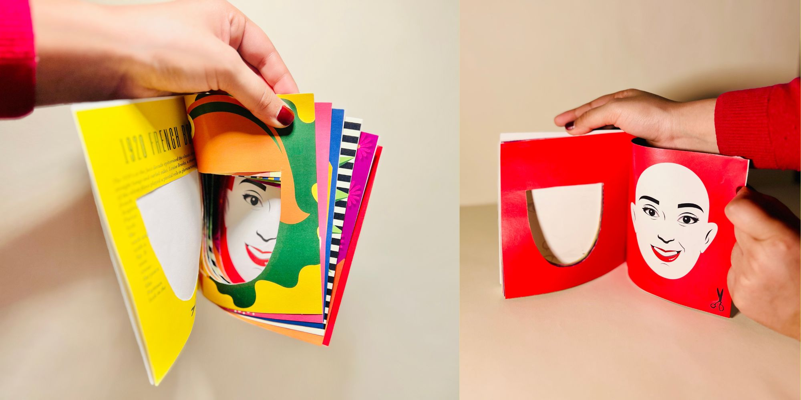
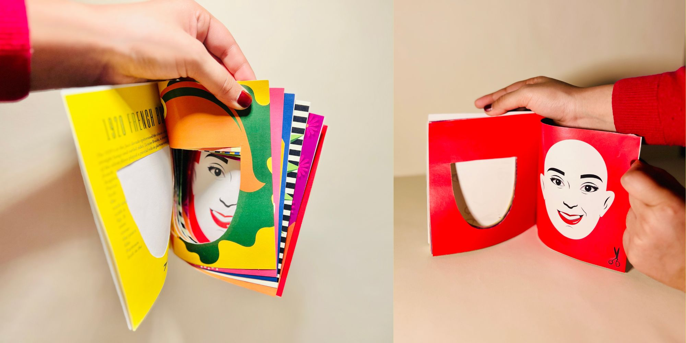

* Detangling the Eras – Book Design
* 2023
* Studio Project
* Illustration
This uniquely designed book explores the evolution of hairstyles as a reflection of history, tracing key cultural and social movements from the 1920s to the 2020s. Each hairstyle serves as a visual marker of its era, from the rebellious bob of the 1920s to the iconic Afro of the 1970s, symbolizing the African American civil rights movement. The book also highlights the bold aesthetics of the punk rock movement, Marilyn Monroe’s signature curls, and other influential styles, offering a dynamic and engaging perspective on history through hair.
 
